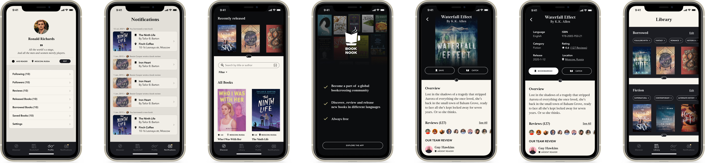
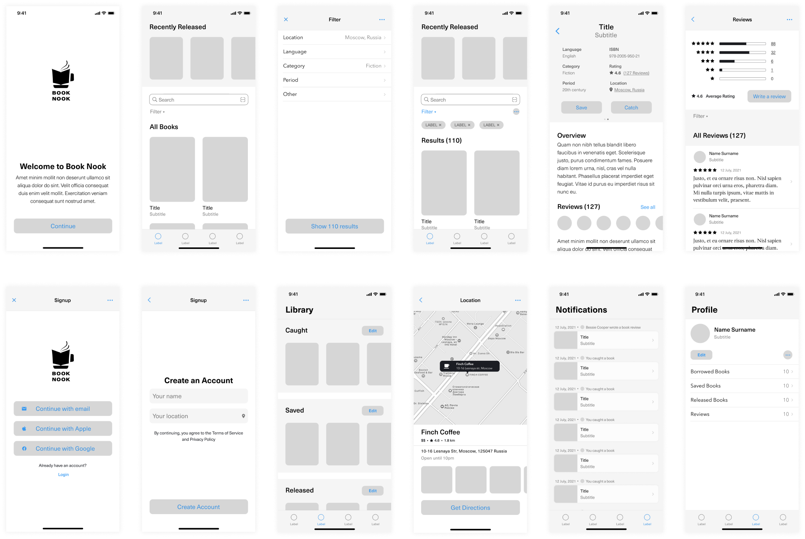
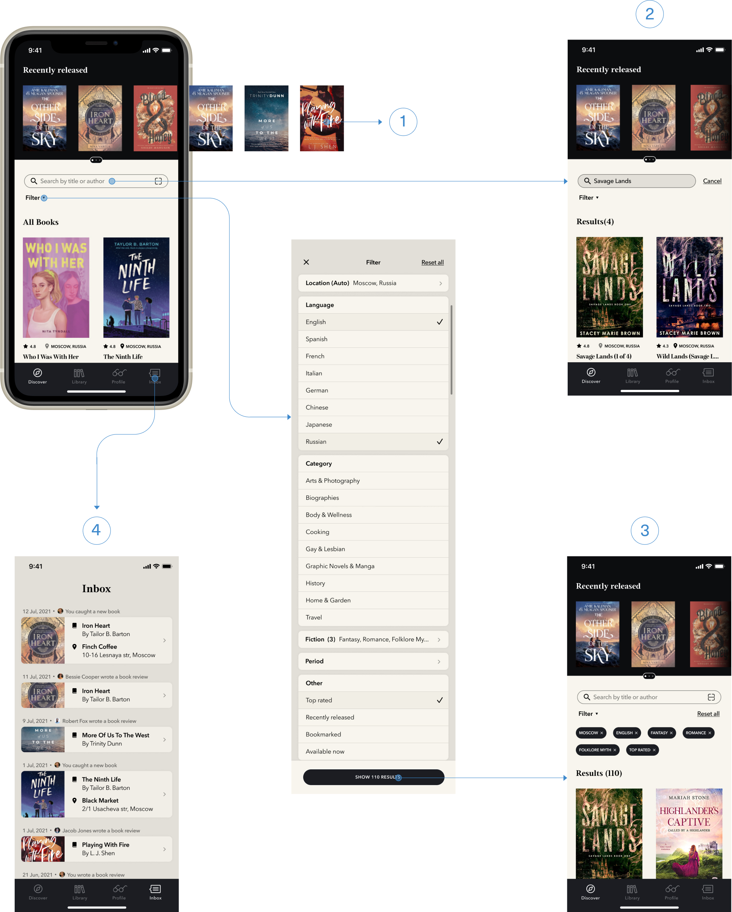
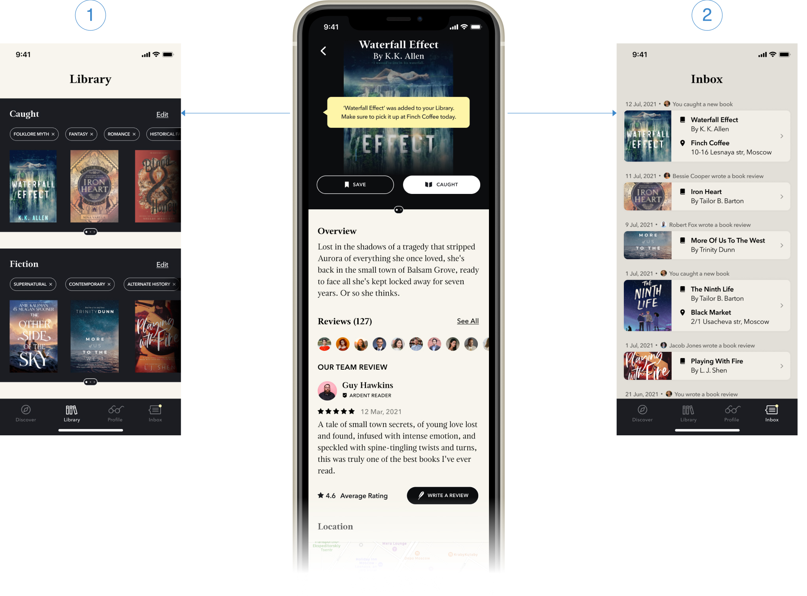
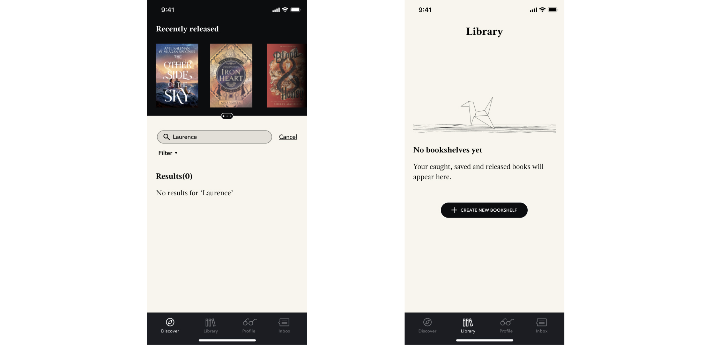

Book Nook
Глобальное приложение для буккроссинга

Overview
Book Nook — это глобальное приложение для буккроссинга, предназначенное для тех, кто считает, что между книгами и кофе существует особая связь.
Мои обязанности
- Branding
- User Research
- Information Architecture
- User Flow
- Wireframing
- Prototyping
Timeline
- Jan–Feb 2021
Tags
- mobile app design
- 2021
User Research
To better define my target audience I conducted remote user interviews and used the collected data for creating several user stories. If you would like to see the screening questionnaire that I used to find people for upcoming interview, follow this link.
User Interview
- What books did you read in the past month?
- How did you choose those specific books?
- What do you like most about bookcrossing.com?
- How do you usually choose which coffee shop to go?
- Are there any coffee shops that you visit frequently?
- What makes reading in a coffee shop so enjoyable for you?
User Stories
Philip
Constantly searching for the best coffee in town.
Always carries a poetry book in his pocket to accompany him on this journey.
Kelly
Sharing books she enjoys reading with like-minded people.
Finds that the only drawback of the official bookcrossing platform is its poorly curated library, which makes the process of finding a new book to read very tedious.
Jonathon
Reading at a new place helps to unplug and recover from daily routine.
Enjoys the feeling of being carried away by an intriguing narrative, invigorating scent of freshly brewed coffee as well as soothing sounds of working coffee machine and conversation of strangers in the background.
Idea
One of the reasons why people come to coffee shops is to read a book. Coffee in this case plays a key role as it engages and stimulates a reader’s mind.
Book Nook app solves two main problems that usually come to mind of a bibliophile:
- What should I read next?
- Are there any great coffee shops in town that I’ve not discovered yet?
For coffee shop owners this concept is appealing because an interesting book collection along with flavorful coffee will attract more visitors.
Logo Icon Semantics

Information Architecture

User Flow

Wireframes

Main Features
Onboarding
This screen immediately prompts users to discover the app’s main features. Signup will be required later if the user wants to add a book to their library.
Discover
There are several possible ways to find the next perfect read:
- All recently released books appear on the top of the Discover screen.
- Using the Search input if you have a specific book title or author in mind.
- Browsing the whole catalog using the Filter option, where books are organized by different categories.
- In the Inbox looking through friends' activities, especially 5-star reviews.

Book details
Each book has its own page where users can find book overview, reviews, location, similar books and tags.
The user can catch* only those books that are currently available (the book status can be checked by swiping right). There is also an option to save a book to read it later.
*catch a book – get a book in a certain location after book-hunting.
Catching a book
- All caught and saved books can be found in the Library
- The activities of catching and saving books as well as releasing* and writing book reviews are displayed in the Inbox.
*release a book – place a book in a certain location for some person to find it.

Empty states
Along with designing main screens, I also invested some time into empty states in order to improve the user experience of the app.

Design System


Conclusion
The challenging part of this project was developing its user flow. Currently there are no apps solving similar problems on the market, and I had to do a lot of research work in order to create a product which core features would be clear and easy to use even for those people who had no previous experience with book crossing before.